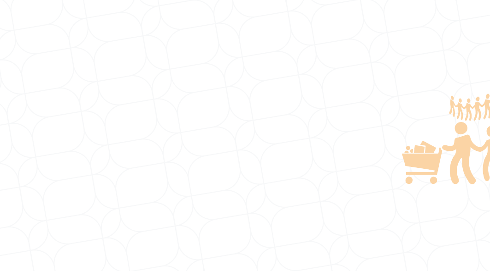

How do I use my digital card?
Open your digital card using the button above. Tap the card to flip it and view your contact details. Anyone you share it with can select Save Contact to add your information to their phone. The card also offers quick actions for calling, emailing and messaging.
Tip: Add your personal card link to your email signature.
How do I share my QR code?
Select Personal QR code to download a QR image that opens your digital business card. Add it to a presentation, print it, or show it when meeting someone.
Can I update my card information?
Yes. Ask your Pantry Packers card administrator to update your published contact details. Your personal card link stays the same when information changes.
Need help or have a special request?
Contact your Pantry Packers card administrator if you need help using or sharing your card.
Email card supportHow can another employee request a card?
Submit the employee's information using the team Google Sheet. The administrator will review the request and prepare a digital card.
Open Google Sheets